|
Liyang Chen (陈礼扬) I am currently a fourth-year Ph.D student at Tsinghua University, supervised by Prof. Zhiyong Wu. My research focuses on human-centric video synthesis, 2D/3D talking face generation and speech processing. |
{kind=link}
{kind=link}
Publications |
|
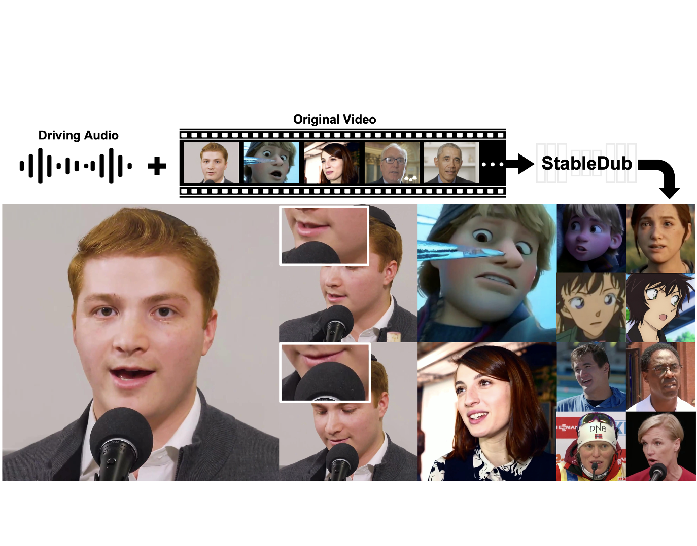
|
StableDub : High-Quality and Generalized Visual Dubbing
Liyang Chen, Tianze Zhou, Xu He, Zhiyong Wu, Yang Huang, Yang Wu, Zhongqian Sun, Wei Yang Under Review, 2024 project page A hight-quality and generalized framework for audio-driven talking face generation with efficient diffusion-based network tunning. |
|
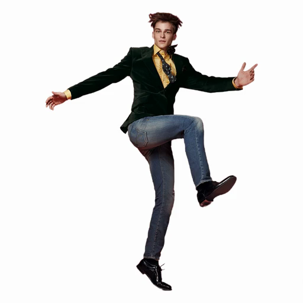
|
MagicMan: Generative Novel View Synthesis of Humans with 3D-Aware Diffusion and Iterative Refinement
Xu He, Xiaoyu Li, Di Kang, Jiangnan Ye, Chaopeng Zhang, Liyang Chen, Xiangjun Gao , Han Zhang, Zhiyong Wu, Haolin Zhuang arXiv, 2024 project page / arXiv A human-specific multi-view diffusion model designed to generate high-quality novel view images from a single reference image. |
|
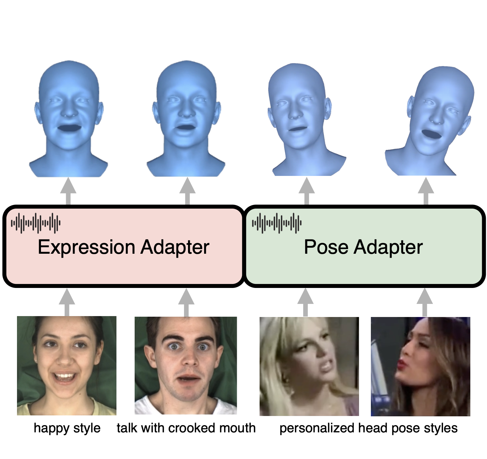
|
AdaMesh: Personalized Facial Expressions and Head Poses for Adaptive Speech-Driven 3D Facial Animation
Liyang Chen*, Weihong Bao*, Shun Lei, Boshi Tang, Zhiyong Wu, Shiyin Kang, Haozhi Huang, Helen Meng Transaction on Multimedia, 2024 project page / arXiv A novel adaptive speech-driven facial animation approach, which learns the personalized talking style from a reference video of about 10 seconds and generates vivid facial expressions and head poses. |
|
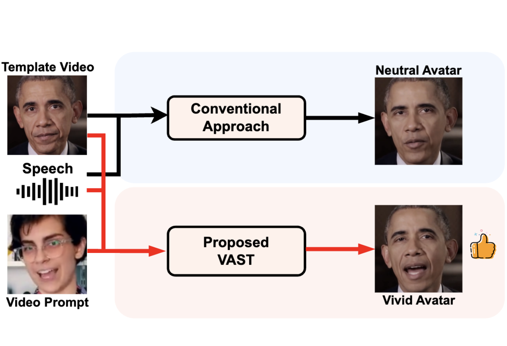
|
VAST: Vivify Your Talking Avatar via Zero-Shot Expressive Facial Style Transfer
Liyang Chen, Zhiyong Wu, Runnan Li, Weihong Bao, Jun Ling, Xu Tan, Sheng Zhao ICCV, 2023 arXiv An unsupervised variational style transfer model (VAST) to vivify the neutral photo-realistic avatars. It is able to flexibly capture the expressive facial style from arbitrary video prompts and transfer it onto a personalized image renderer in a zero-shot manner. |
|
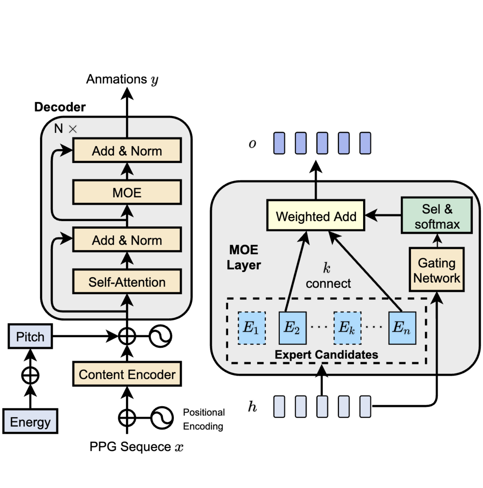
|
Transformer-S2A: Robust and Efficient Speech-to-Animation
Liyang Chen, Zhiyong Wu, Jun Ling, Runnan Li, Xu Tan, Sheng Zhao ICASSP, 2022 project page / video / arXiv A novel robust and efficient Speech-to-Animation (S2A) approach for synchronized facial animation generation in human-computer interaction. Experiments demonstrate the effectiveness of the proposed approach on both objective and subjective evaluation with 17x inference speedup compared with the state-of-the-art approach |
|
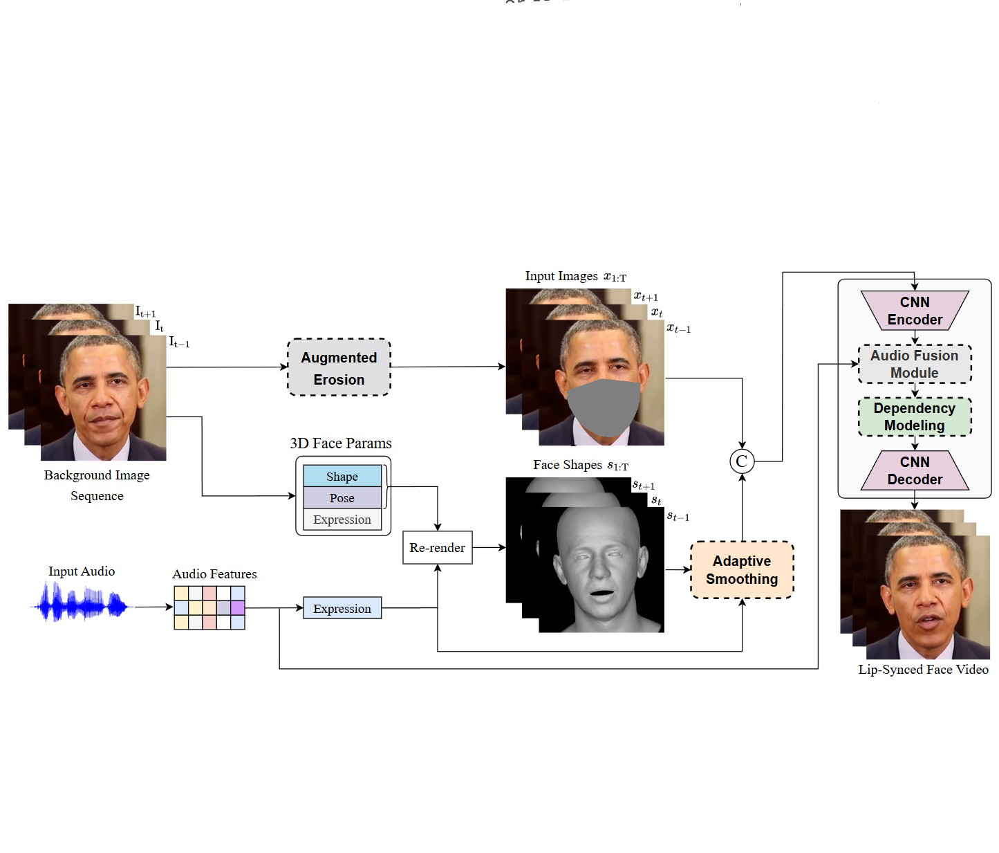
|
StableFace: Analyzing and Improving Motion Stability for Talking Face Generation
Jun Ling, Xu Tan, Liyang Chen, Runnan Li, Yuchao Zhang, Sheng Zhao, Li Song IEEE Journal of Selected Topics in Signal Processing, 2023 project page / arXiv we conduct systematic analyses on the motion jittering problem based on the pipeline that uses 3D face representations to bridge the input audio and output video, and improve the motion stability with a series of effective designs. |
|
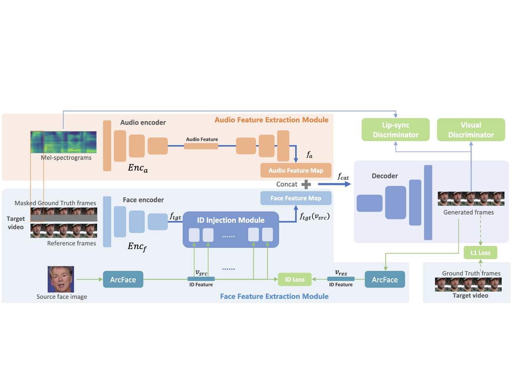
|
Wavsyncswap: End-To-End Portrait-Customized Audio-Driven Talking Face Generation
Weihong Bao, Liyang Chen, Chaoyong Zhou, Sicheng Yang, Zhiyong Wu ICASSP, 2023 paper Audio-driven talking face and face swapping are typically viewed as separate tasks. We propose an end-to-end model that combines these two tasks. |
|
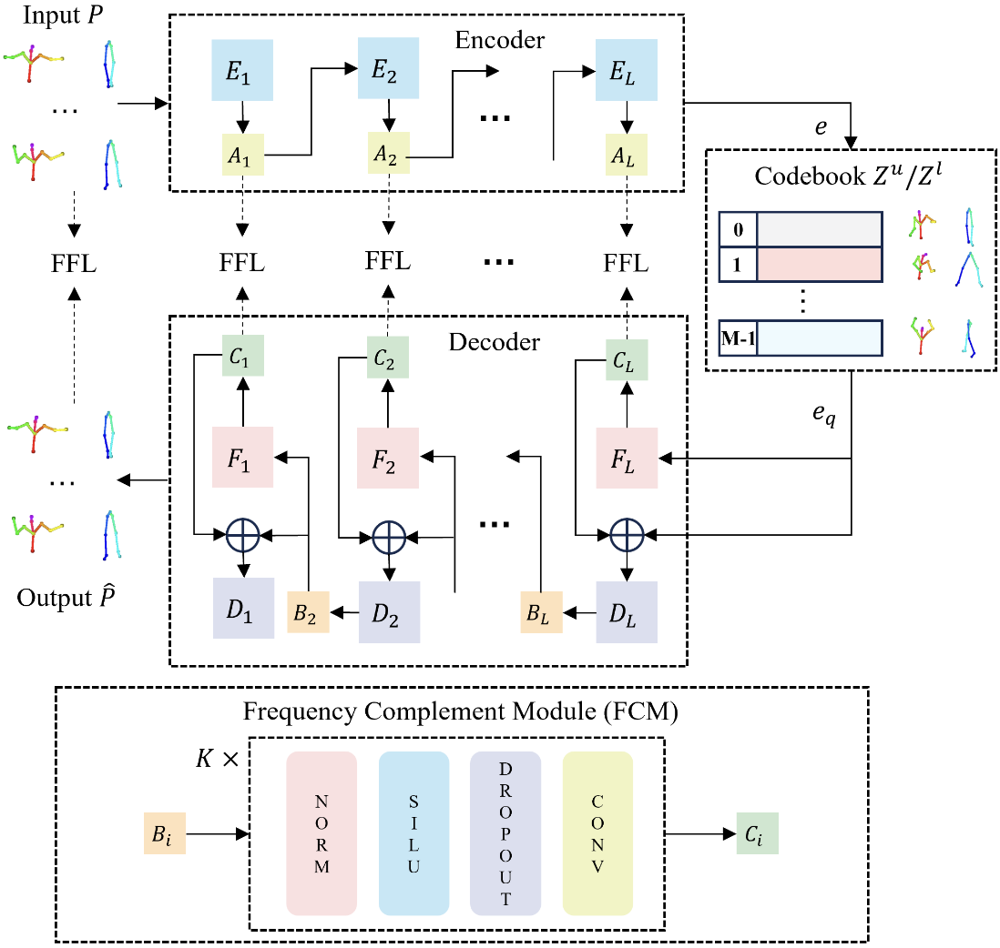
|
Enhancing Expressiveness in Dance Generation via Integrating Frequency and Music Style Information
Qiaochu Huang Xu He, Boshi Tang, Haolin Zhuang Liyang Chen, Shuochen Gao, Zhiyong Wu, Haozhi Huang, Helen Meng ICASSP, 2024 arXiv A novel dance generation method designed to generate expressive dances, concurrently taking genre matching, beat alignment and dance dynamics into account. |
|
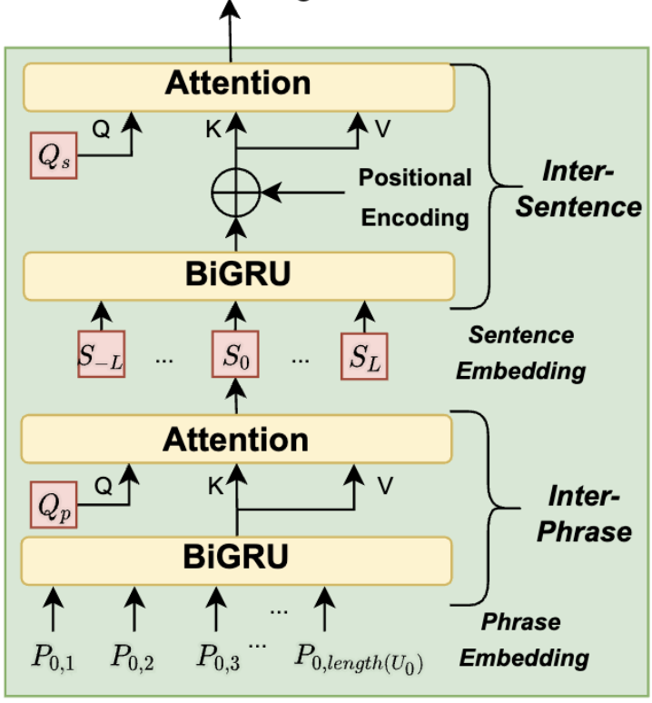
|
Towards Expressive Speaking Style Modelling with Hierarchical Context Information for Mandarin Speech Synthesis
Shun Lei, Yixuan Zhou, Liyang Chen, Zhiyong Wu, Shiyin Kang, Helen Meng ICASSP, 2022 arXiv Previous works on expressive speech synthesis mainly focus on current sentence. The context in adjacent sentences is neglected, resulting in inflexible speaking style for the same text, which lacks speech variations. |
|
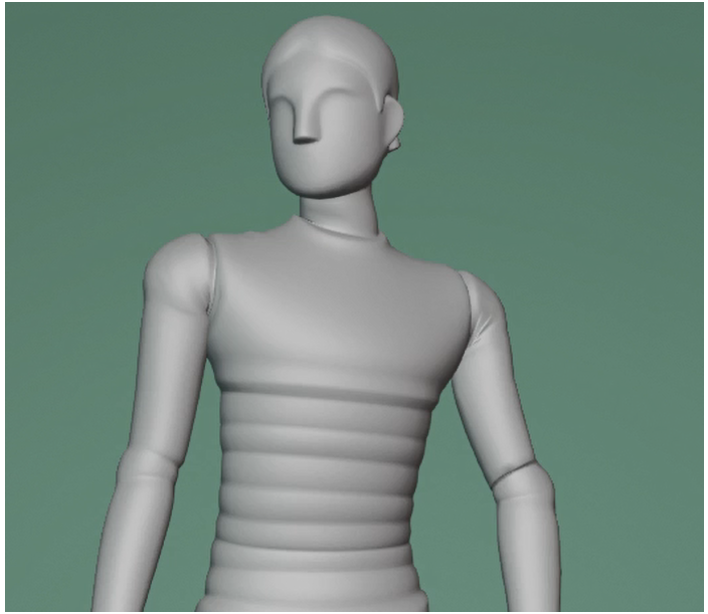
|
The ReprGesture entry to the GENEA Challenge 2022
Sicheng Yang, Zhiyong Wu, Minglei Li, Mengchen Zhao, Jiuxin Lin, Liyang Chen, Weihong Bao ICMI, 2022 project page / arXiv We explore an automatic gesture generation system based on multimodal representation learning |
|
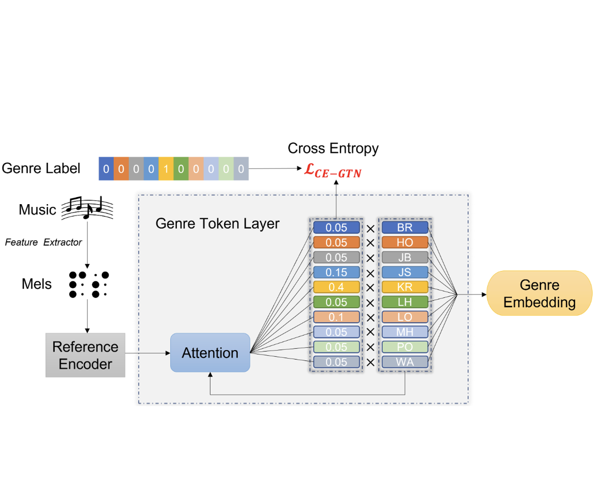
|
GTN-Bailando: Genre Consistent long-Term 3D Dance Generation Based on Pre-Trained Genre Token Network
Haolin Zhuang Shun Lei, Long Xiao, Weiqin Li, Liyang Chen, Sicheng Yang, Zhiyong Wu, Shiyin Kang, Helen Meng ICASSP, 2023 project page / arXiv A dance generation framework to enhance the genre consistency of long-term dance generation. |
|
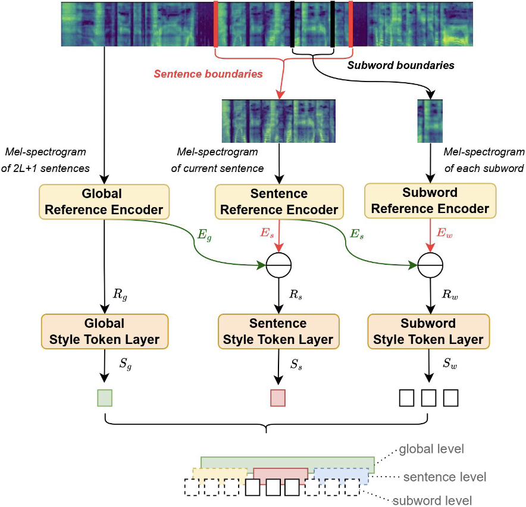
|
MSStyleTTS: Multi-Scale Style Modeling With Hierarchical Context Information for Expressive Speech Synthesis
Shun Lei, Yixuan Zhou, Liyang Chen, Zhiyong Wu, Xixin Wu, Shiyin Kang, Helen Meng IEEE/ACM Transactions on Audio, Speech, and Language Processing, 2023 arXiv A style modeling method for expressive speech synthesis, to capture and predict styles at different levels from a wider range of context rather than a sentence. |
|
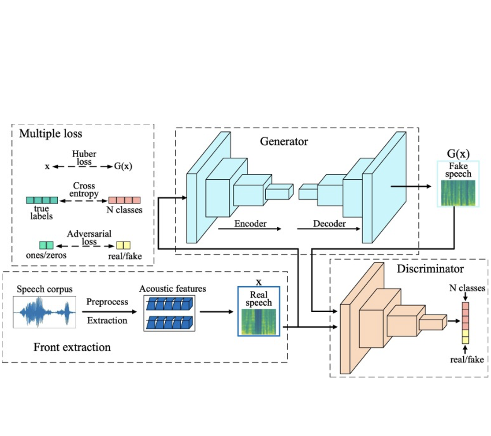
|
SpeakerGAN: Speaker Identification with Conditional Generative Adversarial Network
Liyang Chen, Yifeng Liu, Wendong Xiao, Yingxue Wang, Haiyong Xie Neurocomputing, 2020 paper SpeakerGAN allows the adversarial networks for distinguishing real/fake speech samples and predicting class labels simultaneously. |
Work Experiences |
|
MoonShot AI, Research Intern
Supervisor: Xu Tan |
Dec. 2024 - Present | |
|
Tencent AIPD/AILab, Research Intern
Supervisor: Yang Wu, Jun Zhang |
Feb. 2024 - Dec. 2024 | |
|
XVerse Technology, Research Intern
Supervisor: Shiyin Kang, Haozhi Huang |
Oct. 2022 - Nov. 2023 | |
|
|
Microsoft Asia, Research Intern
Supervisor: Runnan Li, Xu Tan |
Apr. 2021 - Aug. 2022 |
|
ByteDance AILab Speech, Research Intern
Supervisor: Shichao Liu |
Jun. 2020 - Mar. 2021 |
|
This page is borrowd from Jon Barron. |